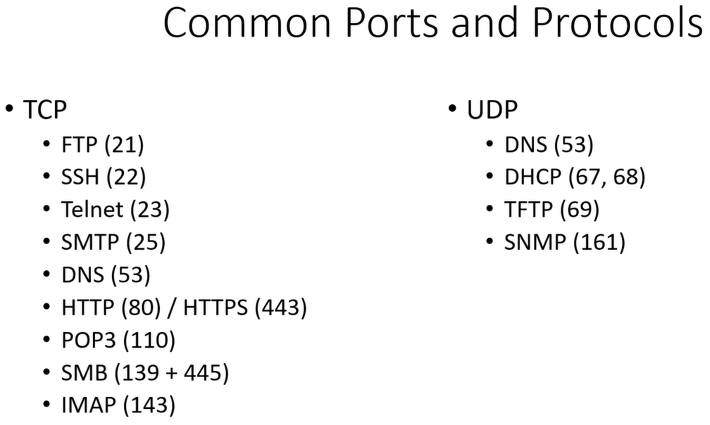

Common Ports and Protocals
You need to be able to know what these ports are just by referencing the number. This will help when scanning because you will know it's limitations.
- File Transfer Protocol (FTP) allows you to put a file or get a file from a server.
- Telnet give you the ability to log into a machine remotely.
- SSH gives you the same ability as Telnet but this is encrypted.
- SMTP, POP3 & IMAP are related to emails / mail
- Domain Name System (DNS) translates the IP address of a website into a text readable format (TCP & UDP)
- HTTP & HTTPS are websites
- SMB this relates to file shares, these are frequently open to networks - a good point of atatck
- DHCP allocates a random IP address to you. It picks a number from a range then allows connection for the given time period.
- TFTP uses TCP instead of UDP.
- Simple Network Management Protocol (SNMP) are occasionally found in networks; they house information that can be gathered from public / community strings
REMEMBER !!
- Become familiar with ALL the different ports